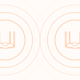
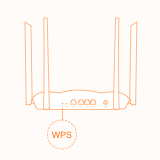
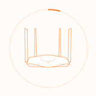
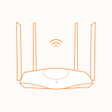

1

Please ensure that the primary node is connected to the network normally, and the node to be added is started and in the factory setting state. Keep a close distance between the two nodes.
2

Press the WPS button of the master node (1 ~ 3 seconds), and the indicator light will flash. Please press the WPS button of the node to be added within 2 minutes (1-3 seconds), and the indicator will flash quickly.
3

The equipment is networking automatically, and the time is less than 2 minutes.
4

When the indicator of the secondary node lights solid on, the networking is successful.